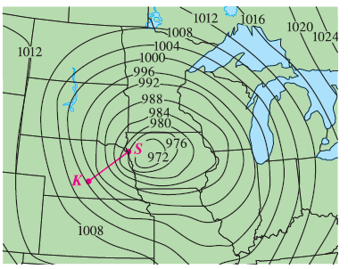

Level curves for barometric pressure (in millibars) are shown for 6:00 AM on a day in November. A deep low with pressure 972 mb is moving over northeast Iowa. The distance along the red line from K (Kearney, Nebraska) to S (Sioux City, Iowa) is 300 km. Estimate the value of the directional derivative of the pressure function at Kearney in the direction of Sioux City. What are the units of the directional derivative?
